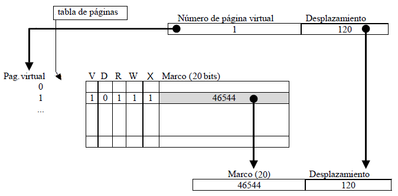
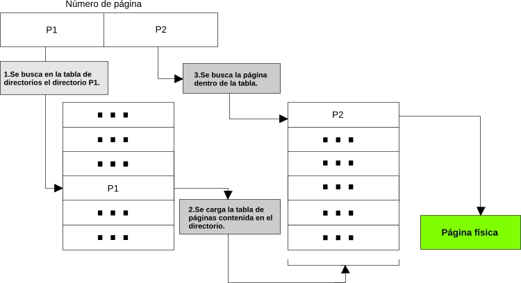
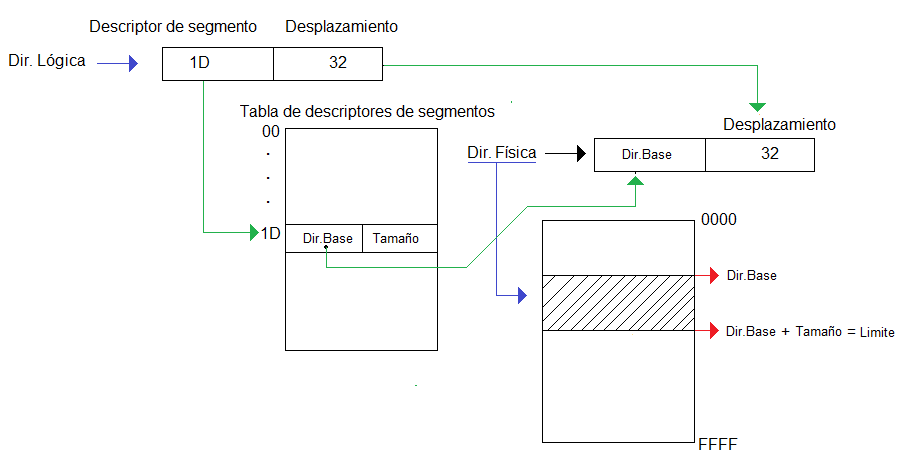

Memory
In the physical memory of a computer operating system coexist, dynamic link routines and user programs. In modern operating systems, memory management resolves issues such as:
- The loading of programs and their location, set the mapping between the logical addresses and physical program memory location.
- The simultaneous presence of more than one program in memory.
- The ability to load routines at runtime (dynamic link routines).
- The sharing of memories for several programs.
- The implementation of complete programs that do not fit in memory.
- The efficient management of memory space.
Management policies throughout history, are:
Resident monitor, fixed partitioning (MFT) or variable (MVT), swapping, paging and segmentation, dynamic linking and virtual memory.
But today's operating systems use virtual memory supported by paging and segmentation.
Paging
Paging is a strategy of memory organization which consist in dividing the memory into portions of equal size, called page frames or pages. They are defined by a page number that identifies each one. Each page is assigned exclusively to a process.
The optimum values for the portions are in 32-bit architecture is 4KB, and 64-bit architecture is 8KB.
Translation memory addresses is based on two concepts:
- The translator logical addresses divided into 2 parts as: the most significant n bits identify the page and the remainder identifies the movement.
- When the dynamic page translator receives, in a logical address, a page number, examine a table (called page table) in which the logical pages to physical pages are related and gets the real address (Frame Number ) as:

When trying to access a missing page fault (in this case called page fault) it occurs.
In order that the page table is not fully loaded in memory and do not occupy consecutive addresses, multi-level page tables are used, which aims to page the page table.
In operating systems with multi-page tables page numbers are divided into two parts, the most significant bits indicate the corresponding pages directory and the least significant bits of the index directory in which the desired page is:

Segmentation
A segment is a memory space of variable size, comprising:
- Descriptor: single segment identifier (within the memory space of the process).
- Segment size

The characteristics of the segmentation are:
- Each process running (whether active, blocked or ready) has a segment table.
- You can make 2 segments overlap so that they share physical memory addresses to different logical addresses, it is what is known as overlap. Thus, different processes can share information and code using the common memory but can not share data (complicate management).
- Memory Protection: add 3 bits to the segment descriptor table for permissions (rwx).
- Resizing is possible whenever there are segments adjacent free positions, or create a new segment and copy the contents of the above.
- Management complex, especially for its resizable.